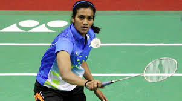
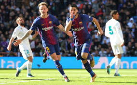

Want to read all the latest sports news? Click below.
Badminton

The smash is the most direct and lethal way to gain a point when playing badminton. The smash also is a stroke that places the greatest demand in terms of physical requirement and mental precision. It is surely frustrating that, while you’ve given all your effort to ensure that you can gain that point from your smash, but in the end, the outcome is not what you expected it to be, and thus, a waste of effort.
Asserting that sports can help win the battle against coronavirus pandemic in the absence of a vaccine, Olympic and World Championships silver medallist shuttler PV Sindhu on Monday urged everyone to make physical activity an integral part of their lives.
Tennis
In the summer of 1988, a 16-year-old from the small city of Monzon, Spain experienced her first taste of pro-tennis success when she captured the singles and doubles titles at a tournament in Sofia. A few months later, an 18-year-old from the former Yugoslavia made his mark as he teamed up with Rudiger Haas to win a doubles event in Frankfurt.
The Swiss Indoors Basel has crowned some of the ATP’s greatest champions: from Bjorn Borg to Pete Sampras to, of course, former ball boy turned all-time event title leader Roger Federer. The historic tournament was due to celebrate its 50th anniversary later this year. Instead, its Golden Jubilee will have to wait until 2021, as organizers have already decided not to stage the indoor event ...
Basketball
The WNBA schedule was released on Monday after a hectic two months of planning. In spite of the coronavirus pandemic and societal unrest, it appears we will finally see some women’s basketball this summer! The New York Liberty, whose roster includes Sabrina Ionescu — the player many fans are most excited to see after her unprecedented collegiate accomplishments — have 16 games that will be on national TV out of a total of 22. Ionescu is the only Division I college basketball player ...
Everything you need to know about the Toronto Raptors in 2019-2020 ...
Football

Despite being repeatedly linked to new attackers ahead of the summer transfer window, the one area that Manchester United seemingly need to improve is their defence. The Red Devils have had no problem finding the back of the net since the restart, scoring 12 goals in their last four games, but defensive lapses are still there to be exploited. Handing Bournemouth a route back into the game due to Eric Bailly giving away a silly penalty could have cost Ole Gunnar Solskjaer’s team ...
With Brendan Rodgers’ Leicester City side currently sat third in the Premier League table, his reputation among English football fans has rarely been higher. However, looking back to his 2013-14 season with Liverpool and Rodgers was held in similarly high regard.